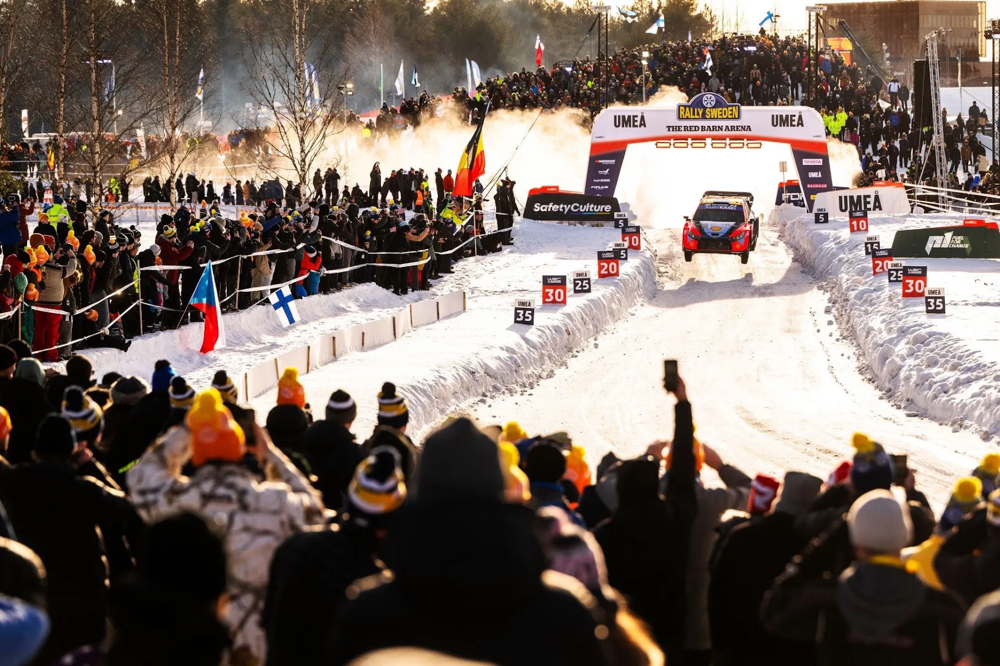
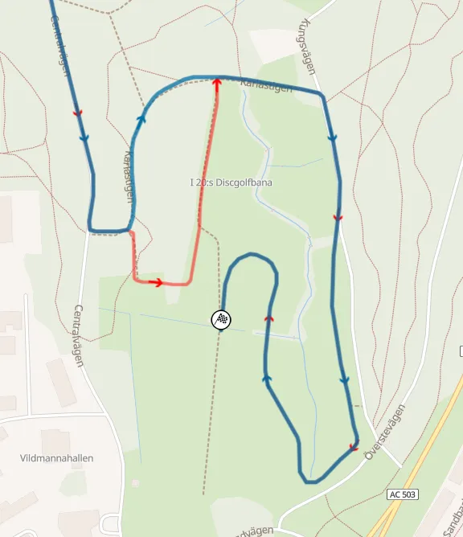
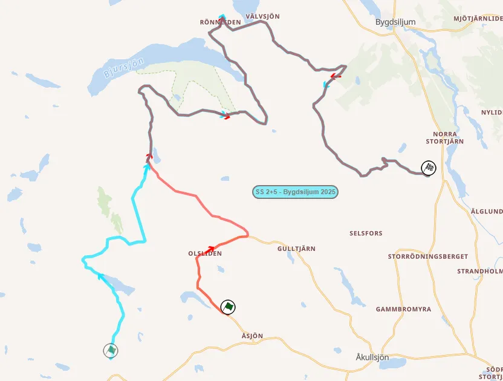
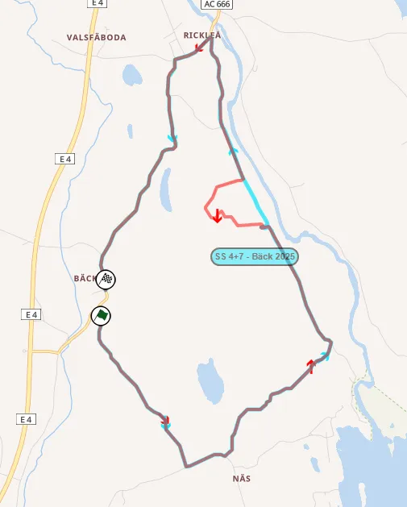
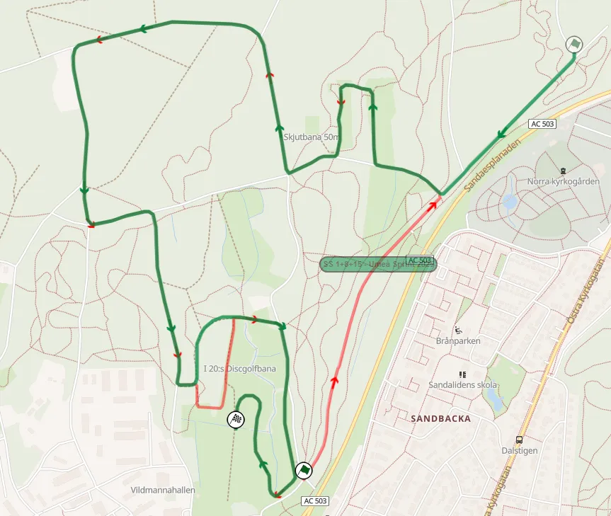
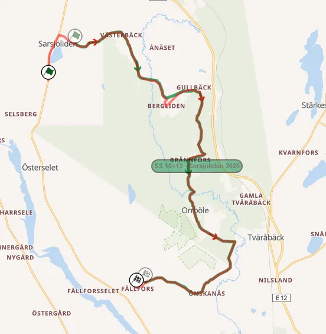
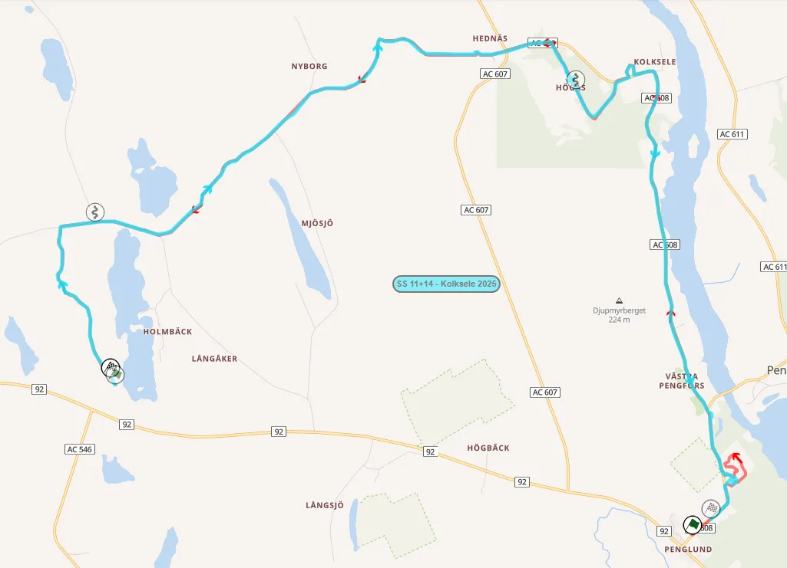
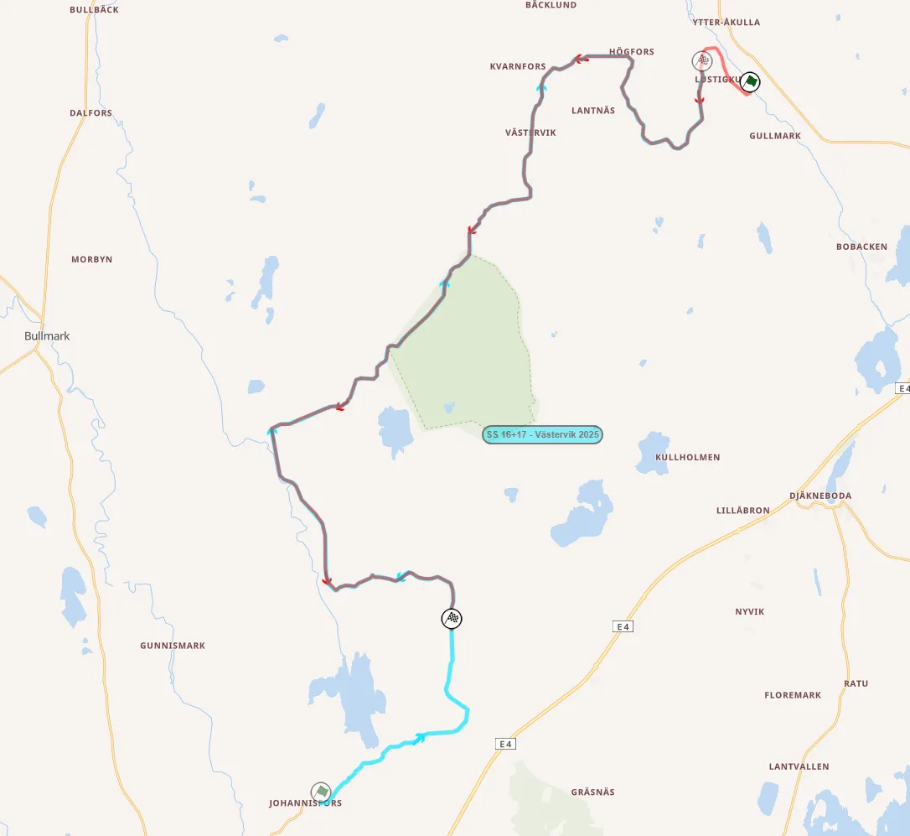

Rally Sweden 2026: Route Preview
Τhumbnail: Red Bull Content Pool
Rally Sweden is the only true snow rally of the WRC calendar. This year's itinerary features no new stages, but still, 35% of the route is new compared to 2025 thanks to stages being run in the opposite direction.
Thursday
Thursday features a pass of the Umeå City shakedown, as well as a run of SS Umeå which acts as both the first and last stage of the event. This is the first time that a stage is both the first and last test of an event since Rallye Monte-Carlo in 2023 (Col de Turini).
Shakedown: Umeå City - 3.44km
Changes compared to past editions: Identical to last year's Shakedown held in the city of Umeå.
Stage description: The first 1.5km are on a semi-wide smooth road. The rest of the stage is on a narrow trail passing through a park, with the stage finish being next to the Ume River. Most definitely not a representative Shakedown, it would be much better as an SSS.
SS1/18 Umeå - 10.08km
Changes compared to past editions: Almost identical to the Umeå stage from 2024 and 2023.
Stage description: The Umeå stage features a mix of forest roads as well as a spectator friendly section at the Red Barn Arena, which has jumps and long sweeping corners.
The start has high-speed sections joined together by junctions, with long straights and fast corners on a narrow road. More tight corners start to appear before the stage enters the Red Barn Arena via a big jump at 9.22km. Two more jumps follow, with the end of the stage being right after a long bend with another jump just at the finish.
This year, there's a small change of route before the cars enter the Red Barn Arena.

The only difference compared to previous years comes as the stage approaches the Red Barn Arena (2026 - red, 2025 - blue)
Friday
Friday is the rally's longest day at 124 competitive kilometers. It features two passes of three repeated stages, all three of which were used on last year's event. The day is rounded off with a pass of the Umea Sprint test.
SS2/5 Bygdsiljum - 27.41km
Changes compared to past editions: It's last year's Bygdsiljum stage, just with a different start. The first 7km are brand new, and never used before in the WRC.

This year's Bygdsiljum stage (red) compared to last year's edition (turquoise)
Stage description: The stage starts on a new road, which is wide and high-speed. At 3.4km the route passes next to a farm, and joins a different, narrower road, via a junction.
A flat-out section follows, with straights and high-speed corners, with the stage joining the route of the 2025 test at 7km.
The ensuing sections are high-speed, with long flowing corners and also featuring a few crests from 9.8 to 13.4km.
After that, the stage becomes slightly more technical, featuring two junctions at 17.15 and 18.4km, after which the road becomes narrower and more bumpy.
Another hairpin follows at 21.4km, with the stage becoming wider, and almost flat out, until the 25.4km mark, after which it turns on a narrow, technical and very bumpy road until the finish.
SS3/6 Andersvattnet - 20.51km
Changes compared to past editions: Identical to the 2025 Andersvattnet test.
Stage description: At first, the stage is fast, with no real big braking zones. As it approaches the village of Storberget at 3.5km, it becomes more technical and narrow momentarily. Shortly after, a long flat-out section ensues, which lasts for about three kilometers. Following that, the stage becomes narrower and bumpier, with more technical sections. It is still quite fast though.
The end of the stage is on a slightly faster road, with many consecutive long, flowing corners, especially towards the end of the stage.
SS4/7 Bäck - 11.52km
Changes compared to past editions: Identical to last year's Bäck stage, with just a bigger deviation at the stage's chicane.

This year's stage (red) compared to last year's edition (light blue)
Stage description: Bäck is a lot more technical compared to the other stages of the day. The first 4km are generally high-speed, on a narrow and technical road, with many dips and bumps on the surface. After the village of Näs, a slow and bumpy section follows.
The stage changes character after that section, featuring a huge 3km straight, interrupted by a detour through a field at 5.3km, which includes some tight corners on a narrow road.
After the end of the straight, the stage turns to a medium-speed and medium-wide road until the finish. It features sections with consecutive long flowing corners.
SS8/15 Umeå Sprint - 5.54km
Changes compared to past editions: Last year's Umeå Sprint test with a new start.

This year's Umeå Sprint stage (red) compared to last year's edition (green)
Stage description: The start is new for this year, and is a flat out blast for roughly a kilometer. Following that, it joins the route of the Umeå stage, with straights and junctions, before entering the Red Barn Arena.
Saturday
Just like Friday, Saturday features three repeated stages used twice. There are some new sections included in the Vännäs and Sarsjöliden tests, whereas Kolksele is run in the opposite direction compared to last year.
SS9/12 Vännäs - 16.31km
Changes compared to past editions: Last year's Vännäs stage, extended by 100m from the finish.
Stage description: The start is on a medium-wide, fast road. The stage deviates from said road at 4km for a small "mickey mouse" section featuring a long right hander, after which the route rejoins the previous road via a junction momentarily, with a hairpin leading to another, more narrow and medium speed road.
The next 2km are completely flat out, after which the stage joins a narrow, but very fast, bumpy road from 7.33km to 11.72km.
Another flat out section follows, with the last couple of kilometres being on narrower, bumpy and more technical road, that features crests and dips.
SS10/13 Sarsjöliden - 16.34km
Changes compared to past editions: Slightly extended from the start compared to the stage used in 2025, while also featuring a deviation through a field. Adrien Fourmaux got stuck in a snowbank here last year, and where Takamoto Katsuta went off the road, trying to chase Esapekka Lappi for the lead in 2024.

Sarsjöliden (red) compared to last year's edition (green)
Stage description: The new start is on a wide road and is flat-out, with the stage joining the route of the 2025 test shortly after. The next 5 kilometers are flat out, with big straights and fast corners. Unlike previous years, there's a small detour through a field at 5.7km. The next section is narrow fast and bumpy, but only lasts for about 2km, before the stage becomes wide again, at 8.67km.
At 10.13km there's a very tight corner, with the road becoming narrower, and also passing over a narrow bridge just afterwards. After that, the stage widens up, and is very fast, with big straights and junctions until the end.
Last year this was the fastest stage of the entire rally, with an average speed of 128.9 km/h.
SS11/14 Kolksele - 16.74km
Changes compared to past editions: The 2025 Kolksele stage, only run in the opposite direction. It features a bigger section inside the Vännäs Motocross/RX track.

Kolksele (red) compared to last year's edition (teal)
Stage description: Almost immediately the stage enters a mickey-mouse section inside the Vännäs Motocross/RX track, with long slow speed corners, similar to the ones used in the Umeå tests. Upon exiting, the stage becomes flat-out, on a wide road.
After a junction at 6.4km, there's a deviation through a farm, with the stage then joining a narrow road, which is still fast, and also includes a tight chicane at 8km. Following that, it rejoins the wide road, where there's another chicane at 9.3km.
From 10.7 to 15.24km, the stage is high-speed, with long straights, and with the road changing from wide to narrow in sections.
The end of the stage is on a medium-wide which is initially technical, but then becomes faster.
Sunday
Sunday is the shortest "proper" day of the event, featuring just three stages. Västervik is reversed compared to 2025, and is the only repeated stage of the day. Umeå is the rally's Power Stage.
SS16/17 Västervik - 25.60km
Changes compared to past editions: Compared to last year's Västervik stage, the 2026 version is run in the opposite direction and is also shortened from the finish, with a significant portion of its faster sections removed. Josh McErlean went off the road here last year.

This year's Västervik stage (red) compared to last year's edition (turquoise)
Stage description: The first section of the stage is on a narrow road, which is bumpy and technical, but still quite fast. At 8.78km, the stage joins a wider road, which is still technical, less than before, and has a series of long, flowing corners from 15 to 17km. After a junction at 18.5km, the stage uses a wide and flat-out road. The end of the test is more technical, featuring consecutive medium to slow-speed corners, as well as a tricky deviation onto a chicane at 22.82km.
What I would change
I am not a huge fan of the Rally Sweden stages in Umeå, as they have less flow and technicality compared to the stages in Karlstad, the rally's former base. What I would do to improve the rally's itinerary would be to replace SS Kolksele, which I was not a fan of last year, with Hjåggsjö, which is used in the Vännäs-Plåt Rallyt. Another change I would make would be to include Brattby οn the itinerary, possibly instead of Sarsjöliden. Lastly I would try to include more sections of the older Savar stage on Sunday's Västervik.


Comments